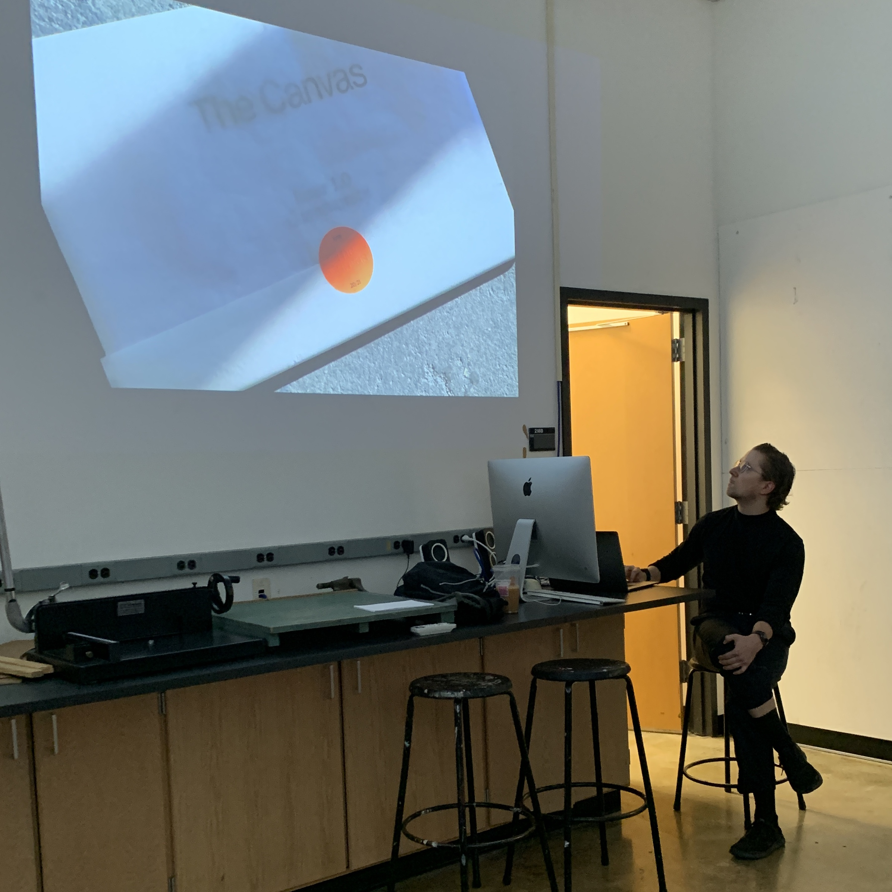

This class was taught in Fall 2022.
Xenos is the Greek word for “guest, stranger, or foreigner,” which will serve as a playful approach to learn about type and typography. In this class xeno-type means looking at type like stumbling upon a foreign visual language. Students are encouraged to look for patterns and key details to decipher form, meaning, and emotion across various design works. They will apply new understandings to weekly exercises, discussions, and projects.
P3: Webring Each student coded a webpage in HTML/CSS and linked them together to form a webring. URL: manifesto.birdriver.org
P2: Book Students designed, printed, and bound books of selected text.
Anthony Crimaldi
Jiaxi Nie Hannnah Allocco
Guest Lecture: Taylor Loutsis On October 26, we welcomed Taylor Loutsis who shared work samples from his studio and introduced his publication The Canvas.
P1: Poster On October 19, students presented a typographic poster for a fictional event.